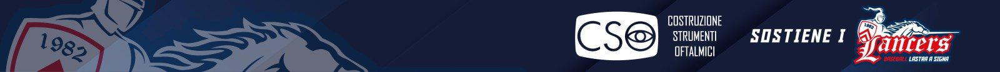
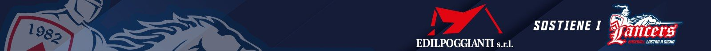

29 luglio 2026
Lancierini al Game of Crocs 2026
I nostri colori a Ravenna in uno dei tornei giovanili più importanti d’Italia.
Il sito ufficiale dei Lancieri di Lastra a Signa: prima squadra in Serie B, settore giovanile e un campo aperto a tutti.
Gioca con noiCalendario Serie BCorsi a partire da 6 anni. Vieni al campo per un allenamento di prova.
Scopri come →Un nuovo spazio dove lo sport abbatte ogni barriera: il campino nato dal progetto “Diamanti inclusivi – Il campo aperto a tutti”.
I nostri colori a Ravenna in uno dei tornei giovanili più importanti d’Italia.
Il traguardo del lanciatore Giuseppe Gabriel Grado con la maglia dei Lancers.


